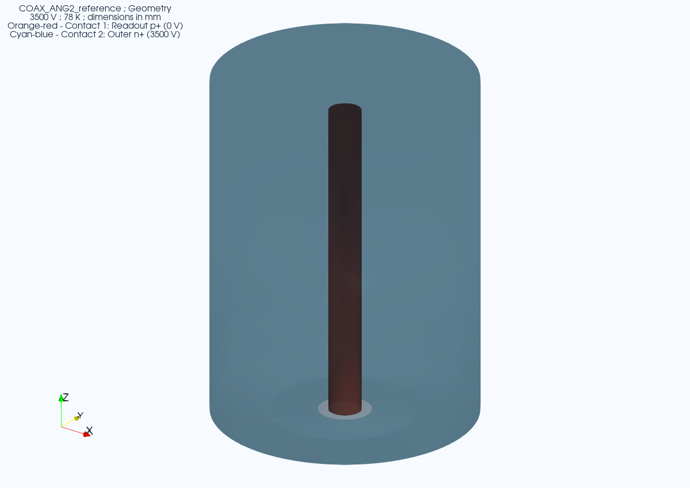
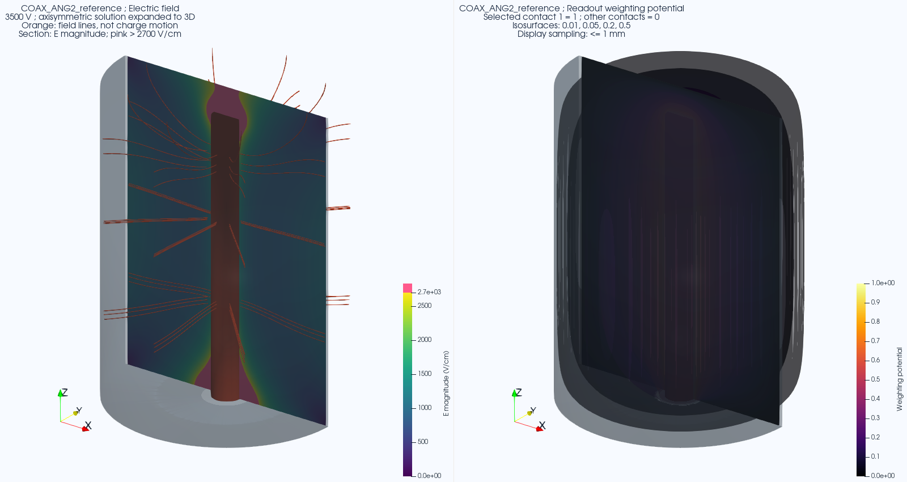

All detectors / COAX_ANG2_reference
COAX_ANG2_reference
Coaxial detector

Rotate the detector
Open full interactive geometry. Saved physical meshes; no fields or carrier trajectories are solved here.
Earlier synthetic response gallery

Saved synthetic study, separate from source-campaign results. Field lines are not carrier trajectories. Gallery settings and scenario overrides are separate.
Contact key and model files
Colors identify contacts, not doping or layer thickness. Small contacts retain their actual size. Full-size saved geometry

Contact IDs and signed potentials
| ID | Canonical contact name | Potential (V) |
|---|---|---|
| 1 | Readout p+ | 0 |
| 2 | Outer n+ | 3500 |
Run locally
This model is available for browsing. New end-to-end execution in Control is not integrated for it.